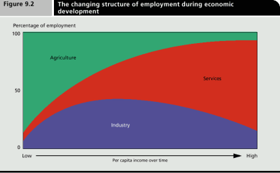

Thomas Hobbes is an Australian uni student hiding out in his mother's basement waiting for the singularity to arrive. As a backup plan he is secretly hoping to avoid the perils of an actual career by becoming a writer and travelling the world.


It is one of the most enduring debates on the internet – will technology destroy our jobs?
Along with outsourcing, technology has thrown many occupations into flux over the last few centuries. We’ve said goodbye to ice cutters, lamplighters, log drivers, switchboard operators, pinsetters, milkman, and Blockbuster clerks. But how many more average Joes will find themselves penniless and directionless upon being replaced with a machine?
Starting with economics 101, there are three key sectors to be aware of in an economy – “agriculture,” “industry,” and “services.” Up until industrialization, the agricultural sector dominated in every country on Earth. 95-99% of the population were rural subsistence farmers. Even in the best of times only a modest surplus could be produced, allowing a small portion of the population to devote their energies to other activities like forging metals, writing poetry, stargazing, and waging wars.
From the 18th century onward the industrial sector began to take off. Millions of rural peasants lost their livelihoods and went to work in factories instead. Over time however, new inventions started to displace even factory workers, pushing them into the services sector.
“Services” basically means “everything else” that isn’t actually farming or manufacturing something—secretaries, police officers, hairdressers, doctors, teachers, lawyers, Joe the plumber…these sorts of jobs now predominate.

This process is far from over. The next big shift will be in self-driving vehicles.
Maybe 10% of all jobs today are based around driving a vehicle of some kind—truck drivers, bus drivers, taxi drivers, street sweepers, pizza delivery boys, and so on. This is not to mention those that work in car insurance offices or repair shops, which will also see major cutbacks. Then there’s train drivers, pilots, construction workers, farmers, checkout chicks and laborers of all kinds. We can expect most of these jobs to vanish within the next fifty years.
So yes – most of us will ultimately lose our jobs, the flag-waving socialists do have a point.
There is one big argument against this however, which is that this same process does lead to the creation of at least some new jobs – How? You may ask. Because those profits have to go somewhere.
Lets say you’re the head of a major corporation, and you’ve just replaced a thousand employees with machines. Your operating costs go down and your profits go up. That money will then be divided between the CEO, the board of directors, shareholders and other connected individuals. It becomes concentrated among a tiny minority, yes, but it doesn’t just vanish.
So the question then is simple – what do all these newly rich muthafuckers spend that money on?
The answer isn’t too hard to find, you just need to look at those industries which have been booming in recent years. Picking one out at random, lets look at say…prostitution.
The sex industry is said to be growing at 5% a year here in Australia (where, because of legalization, some statistics are available). This covers everything from a quick handjob on the street to those Arab oil sheikhs who spend tens of thousands of dollars to import slutty Instagram models and shit on their faces.
Welcome to life in the rich man’s economy.
Gambling is another booming industry. Macao recently overtook Las Vegas as the world’s largest city in gaming revenues. Again Australia is ahead of the curve. Over the last fifty years a large slice of the Australian population has gotten addicted to throwing away their hard-earned wages at pubs and casinos, with the better part of a million people playing the Pokies weekly.
Hell, the global drug trade has been steadily booming for decades, and is now worth an estimated $435 billion annually. Organised crime accounts for 1.5% of global GDP. Legal issues aside, being a drug dealer has probably never been a more viable career.
Aged care is another one – as the Baby Boomers retire and the birth rate continues to drop, there’s going to be millions of asses out there that need wiping and fewer and fewer young people to do it.
Tourism worldwide has been growing steadily at 4% a year. Rich people love travelling halfway across the world to visit ancient monuments…mostly so they can take tasteless selfies and peacock themselves out on social media.
Taking things up a notch, there have been some truly spectacular examples of extravagant spending from the world’s rich lately. Hell, in Dubai today, there are people who will spend more than $14 million on a license plate. There’s a guy in India who built a $1 billion, 27-story house that requires 600 staff to run it. Then there’s compulsive hoarders like former Philippines first lady Imelda Marcos who, upon fleeing a revolution in her country, had to leave behind her vast wardrobe, complete with 15 mink coats, 508 gowns, 1,000 handbags and 3,000 pairs of shoes.
Somebody has to be selling them this crap.
In short – if you have lost your livelihood to the globalization machine, this is option #1 on how you get it back. You need to find a rich prick with more money than common sense to whom you can sell $14 million license plates, 27-story houses or their three thousandth pair of shoes.
Of course I don’t literally mean we should all become con-artists – you just need to be the sort of salesman who can convince people that, despite a hundred thousand years of functioning perfectly well without them, it is absolutely vital we all now get iPads.
Twenty years ago, nobody owned household computers or mobile phones – now they’re pretty much mandatory. Thirty years ago, laser eye surgery was unheard of, but now more than a million procedures are conducted every year. At a few grand a pop, that’s a lot of dough.
Hell, genetic engineering is soon going to end up creating a whole new industry, just as information technology has taken off over the past fifty years. How many people would pay for a geneticist to give them a pill which makes their dick bigger? For real? Or prevents their boobs from sagging? Or gives them the physique of Arnold Schwarzenegger?
There’s billions of vain people out there just waiting for someone to come along and offer such a deal. Of course, the holy grail here is longevity treatments. If you invented a reliable means of biological immortality tomorrow, you’d be the world’s first trillionaire by the end of the year.
It is unlikely that most of us will profit from breakthroughs like these however. This brings us to option #2 for avoiding destitution in our modern economy.
So we know there is a feedback loop that fuels new job growth. But will it last forever?
Despite a never-ending barrage of complaints, the average westerner works considerably fewer hours than preceding generations. The average working week was as high as 60 hours in industrialized countries in the late 19th century, but declined to about 40 hours in the aftermath of WW2. Today it averages 33 hours, and is under 30 in some European countries.
In response, countries have been gradually decreasing their working weeks and increasing their minimum wages as the jobs market dries up. Some 30% of people in western countries now have college degrees, meaning they are well into their 20s before they properly enter the workforce. Many were skeptical, but the fabled 20-30 hour work week last century’s futurists promised us may finally be on the horizon.
And lets face it, many of us will never see any real benefit from trickle-down economics. There are inherent limits on how flexible workers can be, creating problems with the neoliberal narrative. It seems they would have you believe if you’re a fifty-four year old brickie who’s just been laid off, all you need to do is put on a bit of lipstick, smarten yourself up, and head down to the local whorehouse to hand in your resume.
Obviously, this is not for everyone. This is seen in the statistic that more than 30% of people are now on some form of welfare.
Of course working class jobs tend to be replaced by machines more easily. The middle class meanwhile remains employed for longer. Doctors and lawyers can’t be replaced with a machine just yet.
We all know poverty naturally drives people to violence. Why else have governments been gradually spooning out more and more welfare to satiate the newly unemployed? Such bribery is necessary to maintain stability. Globalization throws a huge spanner in the works however, preventing any one country from finding an equilibrium between the disenfranchised poor and the increasingly affluent rich.
When threatened with higher taxes, businesses can easily move overseas, starving the welfare state of resources. This process is the reason every major western country is starting to drown in debt.
As this is the manosphere, I suppose we should take a moment to relate all this to the breakdown of gender relations. In short, no woman wants to marry a bum living on welfare, no matter how generous the weekly cheques. Financial inequality leads to sexual inequality. With women not as financially dependent on men (at least directly) and having never been as demanding of sex, they are much less inclined to marriage and are instead attempting to raise children on their own. This shift is at the root of today’s dysfunctional gender relations, though it probably won’t be sustainable for long.
So yes, through outsourcing and new gadgets the top 1% of our society has stolen our livelihoods from us, and will continue to do so. The only way to get them back is to find some niche new service and sell it back to the billionaires. If you fail in this attempt, then your best option is to picket your local congressman, vote Democrat and demand higher wages or enough welfare to get by.
In the long run, I think your average human is going to be made completely obsolete by technology, and unless we change dramatically we will all get sucked down into the growing event horizon of the welfare state. In the meantime, lets hope these tensions do not blow out into actual violence.
The elites are playing a dangerous game, and we all know how the last Red October turned out.
Read More: Ignore The Unwarranted Hate Of Trade Jobs
{kind=link}
{kind=link}
{kind=link}
{kind=link}
{kind=link}